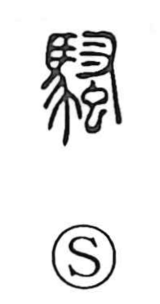

騒

Uncategorized
Kun: sawagu, sawagashii, zawameku | On: so
clamor ・ uproar ・ commotion ・ to make a fuss
Explanation
A phono-semantic character: the original form 騷 combines the semantic element 馬, “horse,” with 蚤 as the phonetic, yielding the On reading so. 蚤 means “flea,” and from flea-bites comes the act of scratching, as seen in 搔 (“to scratch”). Paired with the image of horses becoming restless and noisy, the graph evokes irritation swelling into agitation and noise—hence the sense of raising a clamor, making an uproar, and being in commotion.